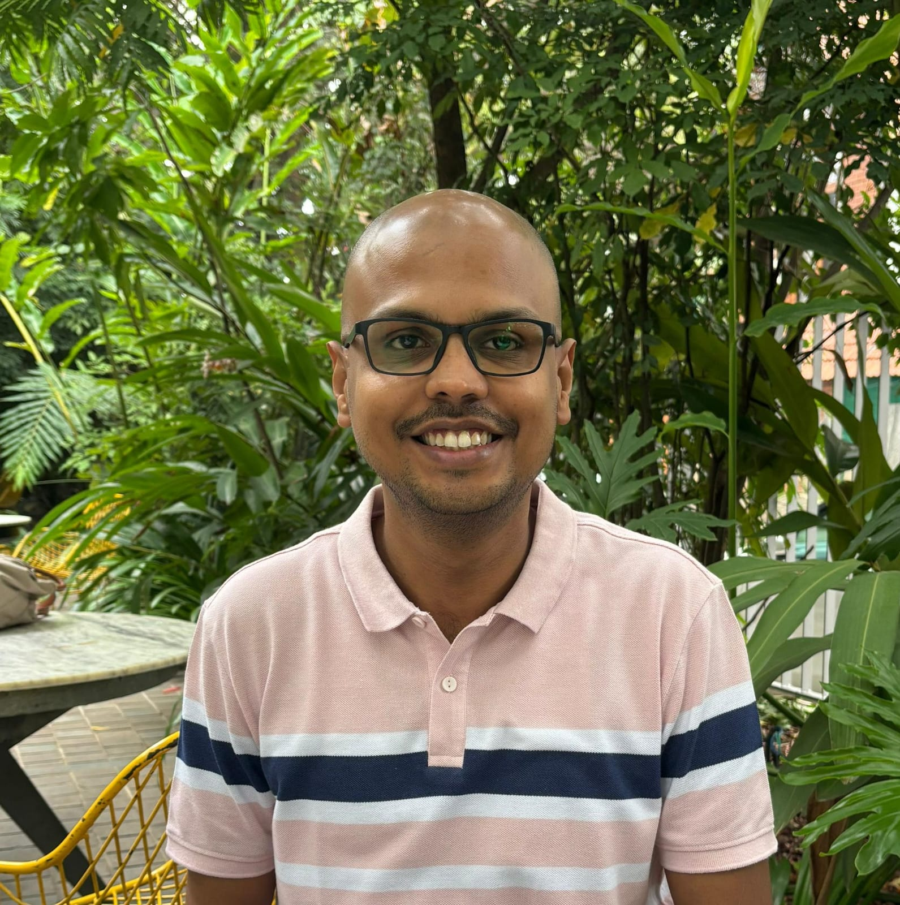

Research Engineer · IBM Research, India
Research engineer with 10+ years of experience in machine learning. I started in probabilistic programming at Microsoft Research, building tools that synthesize statistical models from data (PLDI 2015). At IBM, I spent several years on the reliability side of ML, working on fairness verification, explainability, and systematic model testing (CVPR, UAI, AAAI).
More recently I have been focusing on foundation models: I trained a structure-aware table encoder and fused it with an LLM backbone for table understanding, using trainable slots and a mixture of denoisers to teach the model where to focus across structure and text (AISTATS 2026), and I am applying item response theory from psychometrics to make LLM post-training more sample-efficient.
Always happy to chat about research, explore opportunities, or potential collaborations.
Tables are a modality, not flat text. We train structure-aware encoders and fuse them with LLMs, using trainable slots and a mixture of denoisers to teach the model where to focus across rows, columns, and text.
Fairness verification, concept-based explainability, adversarial robustness. Making sure models do what we think they're doing.
Synthesizing probabilistic programs from data and automating ML pipeline configuration using constrained optimization.
We've used item response theory to evaluate vision models (10 images can rank 91 models, Kendall 0.85). Now exploring how these ideas can make RL post-training for LLMs more sample-efficient.